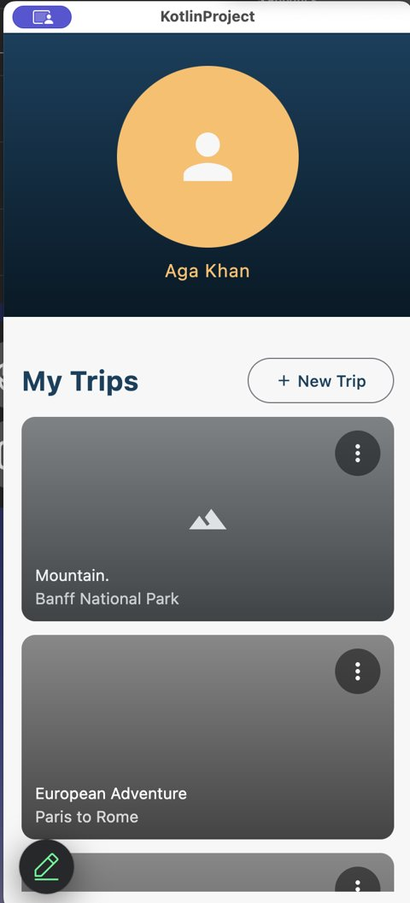
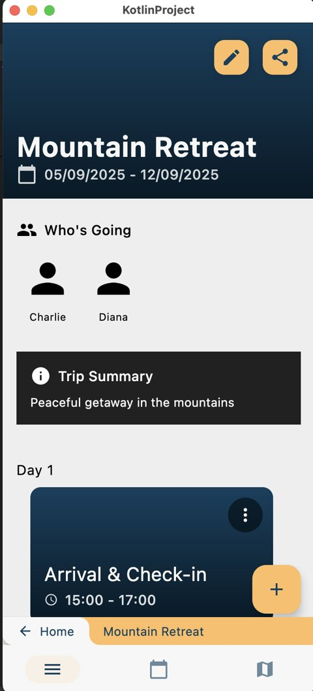
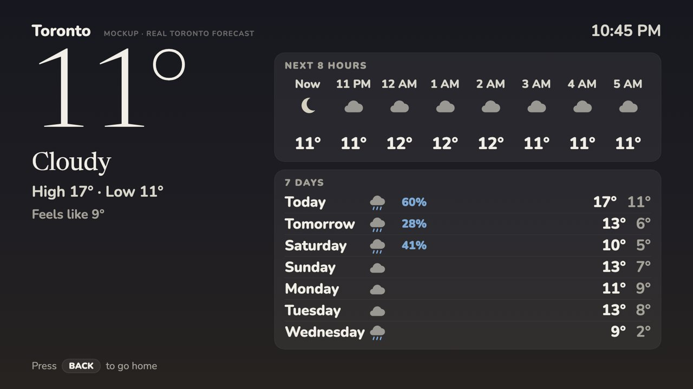
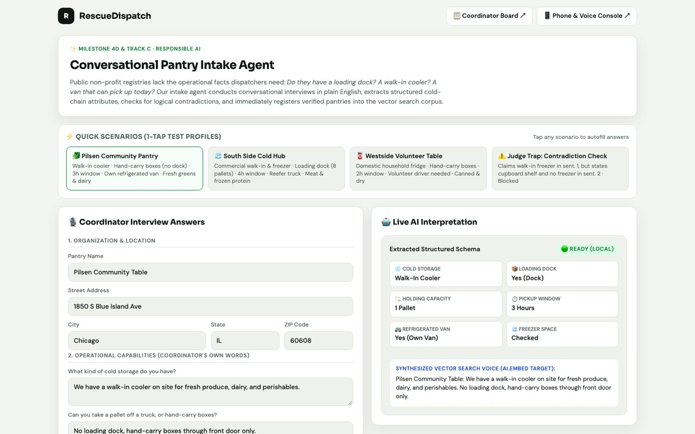

Three projects that show the range of what I build: a team-built cross-platform app, a
voice-controlled TV system with an AI agent, and an AI food-rescue broker built at a hackathon.
01 · Team project · Fall 2025 · EECS 3311 Software Design
Navi: collaborative trip planner
A Kotlin Multiplatform app for planning trips with friends: create a trip, build a
day-by-day itinerary, add members and events, and see everything on a map. I led a
five-person team as Project Manager and Scrum Master.
Kotlin Multiplatform with Compose Multiplatform UI (Android, desktop/JVM and web targets)
Decompose for multi-level navigation; MVVM with view models, repositories and remote data sources
Ktor server backed by PostgreSQL in Docker; Mapbox Search Box API for places and coordinates
A separate Python service for AI-generated trip suggestions
Scrum: three sprints, Jira (SCRUM-xx tickets), feature branches and pull requests, burndown charts, sprint reviews
Skills
Languages
Kotlin
Python
SQL
Frameworks
Compose Multiplatform
Ktor
Decompose
kotlinx.serialization
Tools
Docker
PostgreSQL
Mapbox API
Git / GitHub
Jira
My role & contributions
Project Manager and Scrum Master, plus 74 of the project's 258 commits:
Built the location autocomplete end to end: a Ktor backend route that calls Mapbox, a shared LocationTextField, and a LocationRepository wired into the trip view model, so every event automatically gets coordinates for the map.
Built and refactored the Trip View and its four sub-flows (Add Event, Add Member, Edit Event, Edit Trip) using Decompose navigation.
Implemented the add, update and delete event UI and fixed navigation bugs (for example, the Home button failing in some states).
Ran sprint planning and backlog refinement, reviewed and merged pull requests, and wrote the sprint documents (system design, release plan, sprint reports).
Outcomes & impact
Delivered three sprints with a working app: trips, members, a day-by-day itinerary, a calendar and a map view.
Location search returns places and points of interest, removing manual coordinate entry.
The five-person team shipped through 40 merged pull requests across three sprints.
What I learned
Being Scrum Master was the hardest part for me. I'm introverted and don't naturally make my work visible, but running sprints meant speaking up, keeping five people aligned and saying out loud when something was at risk. On the technical side, putting the Mapbox calls behind our own Ktor endpoint kept the API key off the client and made the frontend simpler to test.


Home view and Trip View (sprint 2 build, sample data).
// server/location/MapBoxService.kt (excerpt)class MapBoxService(private val client: HttpClient) {
// Read lazily so startup and tests don't fail without a tokenprivate val token: String by lazy {
System.getenv("MAPBOX_ACCESS_TOKEN")
?: readTokenFromDotEnv()
?: error("MAPBOX_ACCESS_TOKEN is not set")
}
suspend fun suggest(query: String, sessionId: String) =
client.get("$baseUrl/suggest") {
parameter("q", query)
parameter("access_token", token)
parameter("limit", 5)
parameter("session_token", sessionId)
}.body<LocationSuggestResponse>()
}
The backend keeps the Mapbox key server-side; the app only talks to Navi's own API.
02 · Personal project · November 2026
TV-Fun: a voice-controlled TV home screen
A simpler, bigger, friendlier Android TV home screen I built for a family member, where
pressing the remote's mic button sends the request to a sandboxed AI agent that can
open apps, search YouTube and speak answers on the TV. A matching phone launcher and a
weather screen came next.
Private repository (Ciftelia/TV-Fun): code walkthrough available on request
Tools, technologies & methods
Two Android apps in Kotlin and Jetpack Compose: a TV launcher (Android TV 11) and a phone launcher (Pixel)
Android's assistant role and SpeechRecognizer to capture voice from the remote
An HMAC-SHA256 signed webhook to an AI agent running in an isolated Docker container
A Python MCP server (Model Context Protocol) exposing five TV tools to the agent over ADB
HTML mockups checked with headless Chrome before building; testing on emulators; a written decision log and runbook
Skills
Languages
Kotlin
Python
HTML / CSS
Frameworks
Jetpack Compose
Android SDK
MCP (Python SDK)
Tools
Docker
ADB
Android emulator
Headless Chrome
AI coding agents
My role & contributions
Solo project: all 16 commits are mine. I owned the design and decisions and worked with AI coding agents to write much of the code.
Designed the architecture and its trust boundaries: the agent runs in its own container with only TV tools, and the webhook only accepts signed requests on the home network.
Made and documented the product decisions (layout, fonts, what the agent may and may not do) and rejected approaches that were risky, such as flashing the TV's OS.
Tested on the real TV and on emulators, drove a performance pass on a low-memory TV, and kept the documentation current for each work session.
Outcomes & impact
The launcher is the TV's real Home screen and is used every day; voice requests like "put on easy soup recipes" open the right YouTube results.
The performance pass cut typical frame time from about 32 ms to 25 ms on a TV with roughly 1.8 GB of RAM.
Added a weather screen with official alerts and themes, and a phone launcher with changeable app tiles (tested on an emulator).
What I learned
With AI coding agents writing much of the code, my job became a lot like my QA role: deciding what "working" means, testing on the real TV and catching the edge cases the agent missed. You can't steer an agent well without understanding the system deeply. Giving an agent control of a real device also made me plan security up front (least privilege, signed requests, a sandbox) instead of patching it later.
Architecture diagram (simplified; network details left out on purpose).

Weather screen design mockup (rendered with headless Chrome).
// HermesClient.kt (excerpt): sign every voice requestval body = JSONObject()
.put("text", text).put("source", "tv-remote")
.toString().toByteArray()
val hmac = Mac.getInstance("HmacSHA256")
hmac.init(SecretKeySpec(secret.toByteArray(), "HmacSHA256"))
val signature = hmac.doFinal(body)
.joinToString("") { "%02x".format(it) }
connection.setRequestProperty(
"X-Hub-Signature-256", "sha256=$signature")
The secret is loaded from a config file at runtime, never from source code.
03 · Hackathon · Agents for Impact 2026 · October 2026
RescueDispatch: AI food-surplus broker
A one-day hackathon build: an AI agent that takes a donor's messy surplus offer ("10
crates of spinach, needs cold storage, must leave by 8pm"), finds pantries that can
actually take it in time, and drafts the pickup message. It weighs neighbourhood
need so the food goes where it helps most. I led the agent lane of a six-person team.
Google Agent Development Kit (ADK) in Python with Gemini as the reasoning model, plus a sub-agent for onboarding new pantries
BigQuery vector search over embedded pantry profiles, reached through MCP Toolbox for Databases
Hard checks after the semantic search: cold chain and storage, profile contradictions, pickup time and pallet capacity
Equity-weighted routing using census poverty and car-access data, with a "logistics first" mode as an alternative
FastAPI backend serving the coordinator web app; GitHub Actions CI; Docker for Google Cloud deployment
Six people split into lanes (data, agent, front end, story), with a shared JSON contract between lanes and milestone tracking
Skills
Languages
Python
SQL
Frameworks & AI
Google ADK
Gemini
MCP
FastAPI
Pydantic
Tools
BigQuery (vector search)
Google Cloud
Docker
GitHub Actions
Git
My role & contributions
Agent lane lead and the team's top committer (26 of 82 commits, about 4,200 lines added):
Built the root ADK agent: its tools, system prompt and Gemini setup, and connected it to MCP Toolbox for Databases so it queries BigQuery directly.
Built the conversational pantry-intake sub-agent, which interviews a new pantry in plain language, turns the answers into structured storage and pickup data, flags contradictions, and registers the pantry so it shows up in search right away.
Added the HTTP API routes the front end uses for matching, briefs and intake, including passing the routing policy through.
Wrote the Match Brief generator, which turns the matcher's output into one-page decision cards; checked 7 real coordinator questions end to end; and set up API-key handling and CI.
Outcomes & impact
Produced 10 Match Briefs covering retail, farm and non-food surplus (for example spinach, 5 tons of potatoes, infant formula), each with a first choice, backups and a ready-to-send message.
The agent catches the "best match on meaning is wrong" traps, such as a pantry that talks about fresh produce but has no fridge, and explains why it skipped each one.
New pantries can be onboarded through a conversation instead of a form and become searchable immediately.
What I learned
A hackathon is about as close as it gets to working without a spec: one day, six people and a problem none of us had seen before. My biggest lesson was that the AI should not make every decision. I let Gemini run the conversation but kept hard rules, like "a household fridge is not a walk-in cooler", in plain, testable code. Splitting into lanes with a shared data contract is how we built one product without stepping on each other.
How an offer becomes a Match Brief. The parts I owned are highlighted.

The pantry intake flow in the team's web app (demo data). The interview logic behind it is my intake sub-agent.